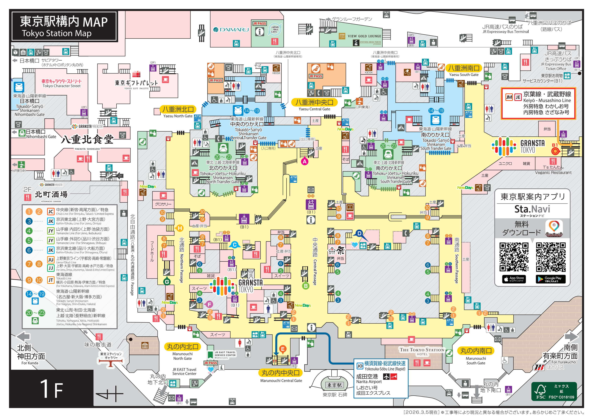

photos フォルダを作り、以下の名前で入れるだけで自動反映されます。photos/地点ID_n.jpg（北）、_e（東）、_s（南）、_w（西）photos/地点ID.jpg（全方向で表示）const scenes = {...} に内蔵されています（iPhone等でも確実に開けるよう単一ファイル化）。map:{x,y} は構内図上の位置（%）です。矢印の向き・位置は構内図上の移動方向から自動計算されるため、通常は調整不要です（階の上り下りのみ x,y で位置指定）。